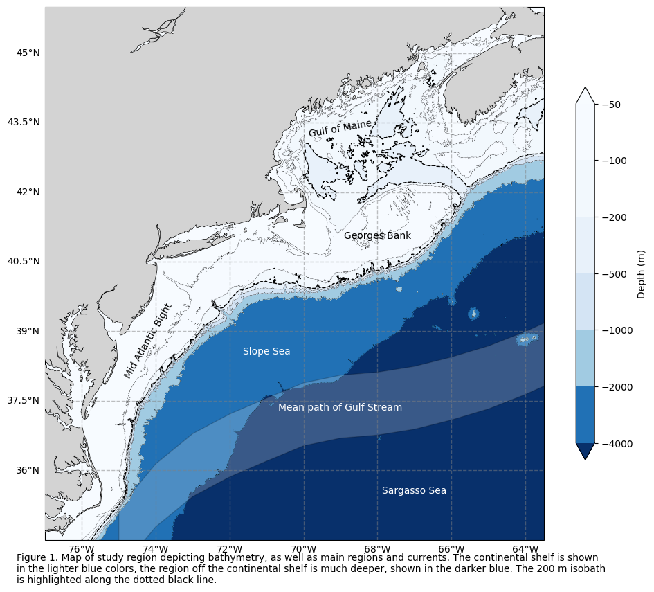
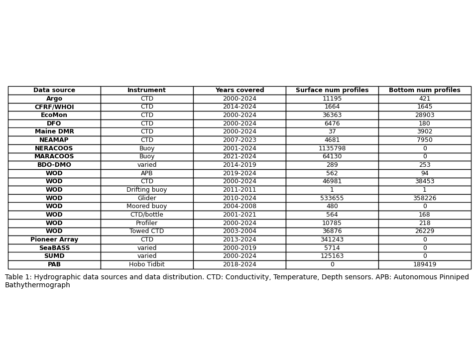
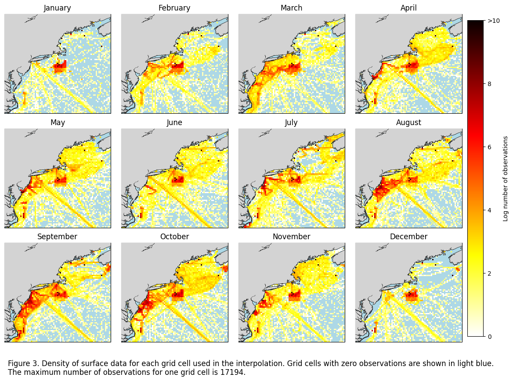
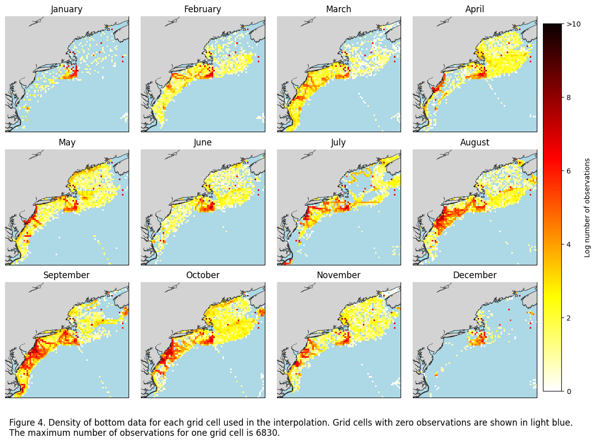
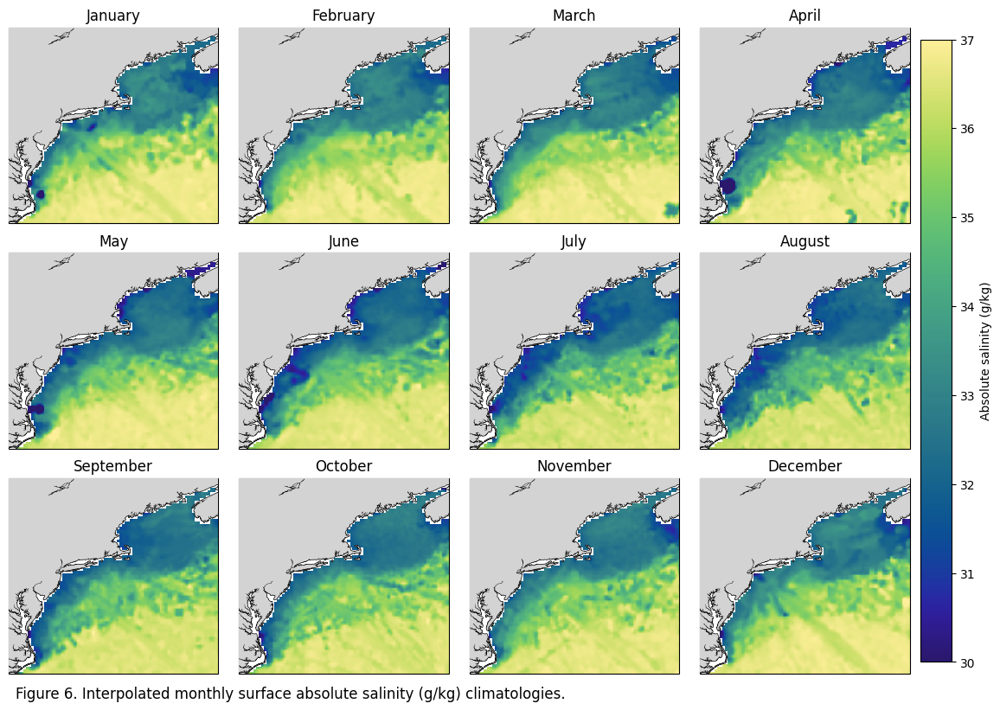
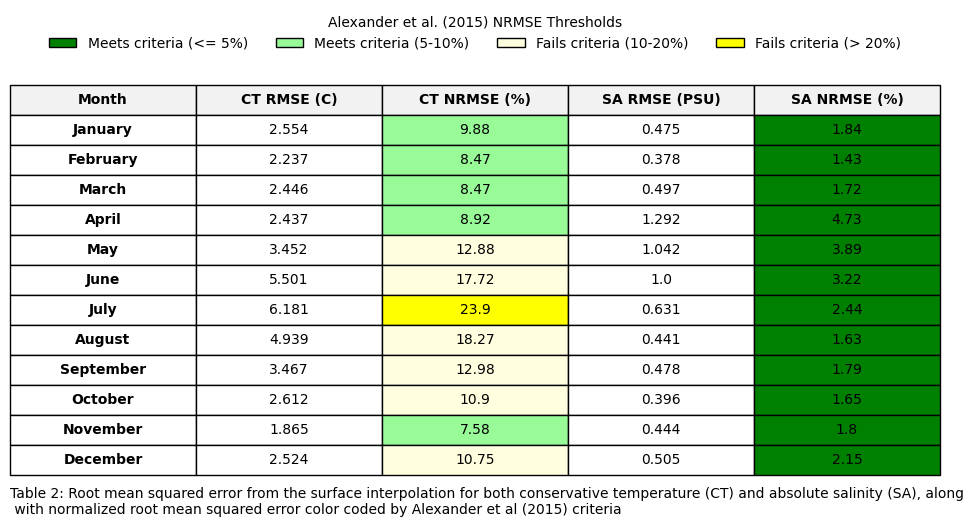
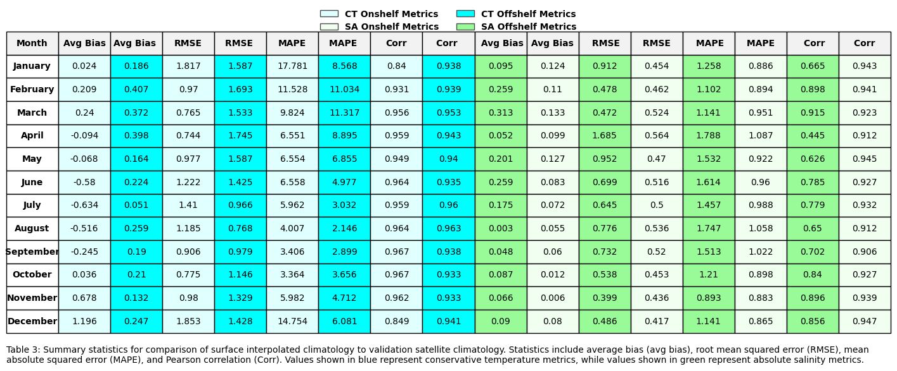
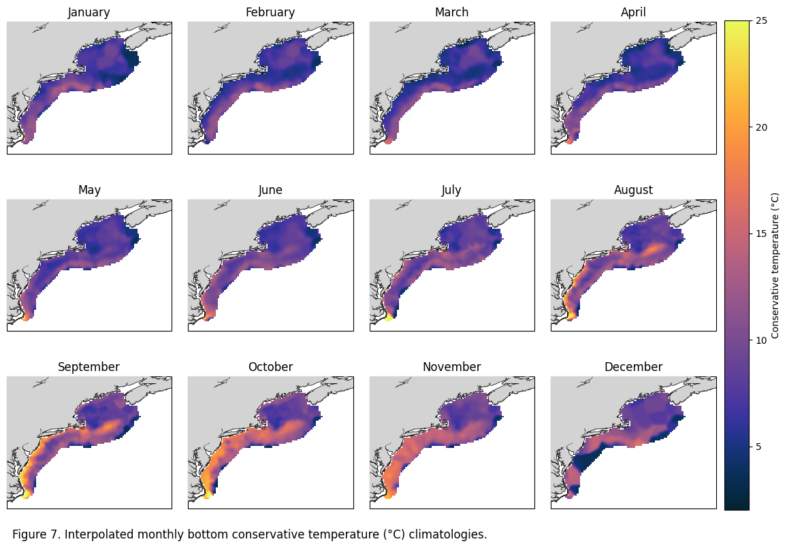
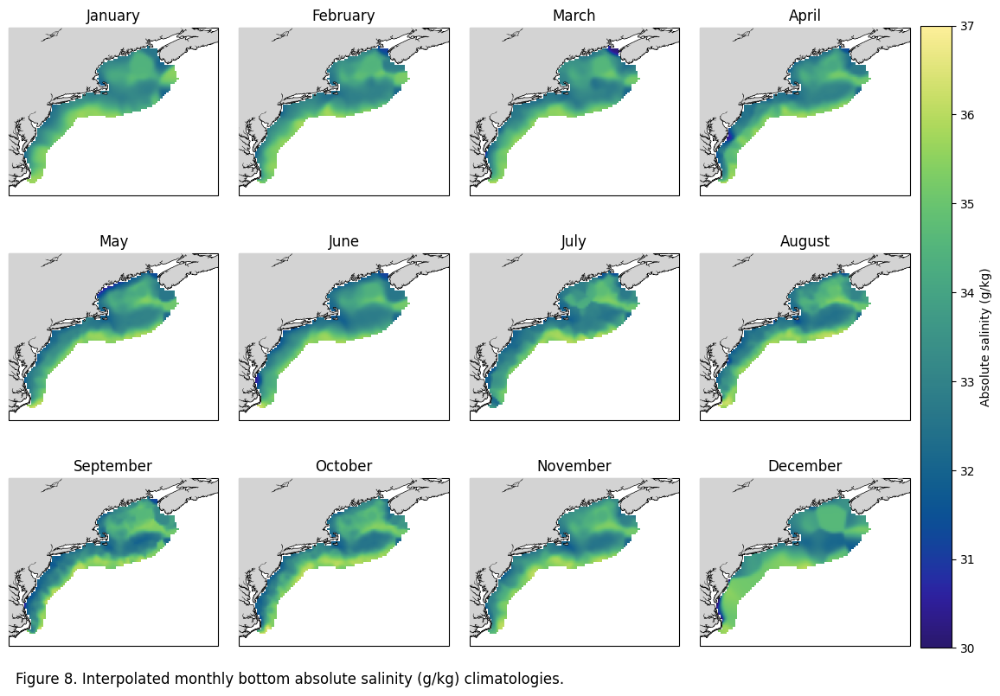

Code used to create figures in “An in situ, interpolated hydrographic climatology of the surface Northwest Atlantic Ocean for 2000-2024”#
Haley Synan1,2*., Kimberly Hyde1, Colleen Mouw2#
1NOAA Northeast Fisheries Science Center, Narragansett, RI, USA
2Graduate School of Oceanography, University of Rhode Island, Narragansett, USA
*Code author
Objectives:#
Create figures and statistical analysis used in Synan et al 2026.
Dependencies:#
Access to the raw data is available HERE
import pandas as pd
import calendar
from scipy.stats import pearsonr
import os
import cartopy
import matplotlib.pyplot as plt
import numpy as np
from global_land_mask import globe
import geopandas as gpd
import cmocean as cm
import xarray_regrid
from matplotlib.colors import LogNorm
import xarray as xr
import copernicusmarine
import cartopy.feature as cfeature
from scipy.ndimage import binary_dilation
from global_land_mask import globe
import rioxarray
from scipy.stats import binned_statistic_2d
from shapely.geometry import mapping
import geopandas as gpd
import requests
import rioxarray
from shapely.geometry import mapping
import geopandas as gpd
from sklearn.metrics import mean_absolute_percentage_error
---------------------------------------------------------------------------
ModuleNotFoundError Traceback (most recent call last)
Cell In[1], line 1
----> 1 import pandas as pd
2 import calendar
3 from scipy.stats import pearsonr
ModuleNotFoundError: No module named 'pandas'
Load data#
#surface POINT (processed)
df_surf=pd.read_csv(r'W:\nadata\PROJECTS\NESCAPES\PROCESSED_DATA\POINT_MEAN_ABOVEMLD\ALL_POINT_MEAN_ABOVEMLD\PROCESSED_MEAN_ABOVEMLD_ALL.csv')
print('surface point data opend')
#bottom POINT (processed)
df_bot=pd.read_csv(r'W:\nadata\PROJECTS\NESCAPES\PROCESSED_DATA\POINT_MEAN_BOTTOM\ALL_POINT_MEAN_ABOVEMLD\PROCESSED_MEAN_ABOVEMLD_ALL.csv')
print('bottom point data opened')
ds_surf = xr.open_dataset(r'W:\nadata\PROJECTS\NESCAPES\PROCESSED_DATA\FINAL\hydrographic_climatology_surface_2000_2024.nc')
print('surface gridded climatology opened')
ds_bot = xr.open_dataset(r'W:\nadata\PROJECTS\NESCAPES\PROCESSED_DATA\FINAL\hydrographic_climatology_bottom_2000_2024.nc')
print('bottom gridded climatology opened')
C:\Users\haley.synan\AppData\Local\Temp\ipykernel_15712\976632148.py:2: DtypeWarning: Columns (1,8,13) have mixed types. Specify dtype option on import or set low_memory=False.
df_surf=pd.read_csv(r'W:\nadata\PROJECTS\NESCAPES\PROCESSED_DATA\POINT_MEAN_ABOVEMLD\ALL_POINT_MEAN_ABOVEMLD\PROCESSED_MEAN_ABOVEMLD_ALL.csv')
surface point data opend
C:\Users\haley.synan\AppData\Local\Temp\ipykernel_15712\976632148.py:5: DtypeWarning: Columns (1,8,13) have mixed types. Specify dtype option on import or set low_memory=False.
df_bot=pd.read_csv(r'W:\nadata\PROJECTS\NESCAPES\PROCESSED_DATA\POINT_MEAN_BOTTOM\ALL_POINT_MEAN_ABOVEMLD\PROCESSED_MEAN_ABOVEMLD_ALL.csv')
bottom point data opened
surface gridded climatology opened
bottom gridded climatology opened
Set directory for figure output#
fig_dir = r'C:\Users\haley.synan\Documents\SEASCAPES\CODE\FIGURES'
Figure 1#
url='https://hfr.marine.rutgers.edu/erddap/griddap/bathymetry_srtm15_v24.nc?z%5B(34):1:(46)%5D%5B(-77):1:(-63)%5D'
url = requests.get(url,verify=False).content
b=xr.open_dataset(url)
b=b.sel(longitude=slice(-77,-63),latitude=slice(34,46))
b =b.where(b.z<0)
gs = gpd.read_file(r'https://github.com/hsynan/READ-EDAB-Synan_hydrographic_climatologies/raw/refs/heads/main/data/shapefiles/gsmeanpath.zip')
isobaths = [-50, -100,-200, -500, -1000, -2000,-4000]
fig = plt.figure(figsize=(12, 10))
map_projection = cartopy.crs.PlateCarree()
ax = plt.axes(projection=map_projection)
cf = ax.contourf( b.longitude, b.latitude, b.z, levels=sorted(isobaths),
cmap='Blues_r',
extend='both', transform=map_projection )
cs = ax.contour( b.longitude, b.latitude, b.z, levels=sorted(isobaths), colors='k', linewidths=0.3, transform=map_projection )
cs_bold = ax.contour(b.longitude, b.latitude, b.z,
levels=[-200],
colors='black',
linewidths=1,
transform=map_projection)
cbar = plt.colorbar(cf, ax=ax, shrink=0.7)
cbar.set_label("Depth (m)")
ax.add_feature(cartopy.feature.COASTLINE, linewidth=1) #add coastlines
ax.add_feature(cartopy.feature.LAND, zorder=100, facecolor='lightgrey') #add lan
ax.set_extent([-77, -63.5, 34.5, 46])
gs.plot(ax=ax, edgecolor="k",facecolor='w',alpha=0.2)
x, y = gs.geometry.centroid.x, gs.geometry.centroid.y
ax.text(-69, 37.3, 'Mean path of Gulf Stream', fontsize=10, ha="center",color='w')
ax.text(-74.2, 38, 'Mid Atlantic Bight', fontsize=10, ha="center",rotation=60)
ax.text(-68, 41, 'Georges Bank', fontsize=10, ha="center")
ax.text(-69, 43.2, 'Gulf of Maine', fontsize=10, ha="center",rotation=10)
ax.text(-67, 35.5, 'Sargasso Sea', fontsize=10, ha="center",color='w')
ax.text(-71, 38.5, 'Slope Sea', fontsize=10, ha="center",color='w')
gl = ax.gridlines(crs=cartopy.crs.PlateCarree(), draw_labels=True,
linewidth=1, color='gray', alpha=0.5, linestyle='--')
gl.top_labels = False
gl.right_labels = False
gl.bottom_labels = True
gl.left_labels = True
ax.set_xlabel('Longitude')
ax.set_ylabel('Latitude')
caption_text = "Figure 1. Map of study region depicting bathymetry, as well as main regions and currents. The continental shelf is shown \nin the lighter blue colors, the region off the continental shelf is much deeper, shown in the darker blue. The 200 m isobath\nis highlighted along the dotted black line."
plt.figtext(0.11, 0.05, caption_text, wrap=True, horizontalalignment='left', fontsize=10)
plt.savefig(os.path.join(fig_dir,'fig1.jpg'), bbox_inches='tight' ,dpi=600)
plt.show()
C:\Users\haley.synan\AppData\Local\anaconda3\Lib\site-packages\urllib3\connectionpool.py:1099: InsecureRequestWarning: Unverified HTTPS request is being made to host 'hfr.marine.rutgers.edu'. Adding certificate verification is strongly advised. See: https://urllib3.readthedocs.io/en/latest/advanced-usage.html#tls-warnings
warnings.warn(
C:\Users\haley.synan\AppData\Local\Temp\ipykernel_15712\1879073384.py:32: UserWarning: Geometry is in a geographic CRS. Results from 'centroid' are likely incorrect. Use 'GeoSeries.to_crs()' to re-project geometries to a projected CRS before this operation.
x, y = gs.geometry.centroid.x, gs.geometry.centroid.y

Table 1#
df=df_surf
dic_surf = {'argo':{'numprof_bot':len(df_bot[df_bot.source=='argo']),'long_name':'Argo','numprof':len(df[df.source=='argo']),'instrument':'CTD','doi':'ERDDAP','years':f'{int(df[df.source=='argo'].year.min())}-{int(df[df.source=='argo'].year.max())}'},
'cfrf':{'numprof_bot':len(df_bot[df_bot.source=='cfrf']),'long_name':'CFRF/WHOI','numprof':len(df[df.source=='cfrf']),'instrument':'CTD','doi':'ERDDAP','years':f'{int(df[df.source=='cfrf'].year.min())}-{int(df[df.source=='cfrf'].year.max())}'},
'ecomon':{'numprof_bot':len(df_bot[df_bot.source=='ecomon']),'long_name':'EcoMon','numprof':len(df[df.source=='ecomon']),'instrument':'CTD','doi':'ERDDAP','years':f'{int(df[df.source=='ecomon'].year.min())}-{int(df[df.source=='ecomon'].year.max())}'},
'dfo':{'numprof_bot':len(df_bot[df_bot.source=='dfo']),'long_name':'DFO','numprof':len(df[df.source=='dfo']),'instrument':'CTD','doi':'ERDDAP','years':f'{int(df[df.source=='dfo'].year.min())}-{int(df[df.source=='dfo'].year.max())}'},
'metrawl':{'numprof_bot':len(df_bot[df_bot.source=='metrawl']),'long_name':'Maine DMR','numprof':len(df[df.source=='metrawl']),'instrument':'CTD','doi':'','years':f'{int(df[df.source=='metrawl'].year.min())}-{int(df[df.source=='metrawl'].year.max())}'},
'neamap':{'numprof_bot':len(df_bot[df_bot.source=='neamap']),'long_name':'NEAMAP','numprof':len(df[df.source=='neamap']),'instrument':'CTD','doi':'By request only','years':f'{int(df[df.source=='neamap'].year.min())}-{int(df[df.source=='neamap'].year.max())}'},
'neracoos':{'numprof_bot':len(df_bot[df_bot.source=='neracoos']),'long_name':'NERACOOS','numprof':len(df[df.source=='neracoos']),'instrument':'Buoy','doi':'ERDDAP','years':f'{int(df[df.source=='neracoos'].year.min())}-{int(df[df.source=='neracoos'].year.max())}'},
'maracoos':{'numprof_bot':len(df_bot[df_bot.source=='maracoos']),'long_name':'MARACOOS','numprof':len(df[df.source=='maracoos']),'instrument':'Buoy','doi':'ERDDAP','years':f'{int(df[df.source=='maracoos'].year.min())}-{int(df[df.source=='maracoos'].year.max())}'},
'bcodmo':{'numprof_bot':len(df_bot[df_bot.source=='bcodmo']),'long_name':'BDO-DMO','numprof':len(df[df.source=='bcodmo']),'instrument':'varied','doi':'ERDDAP','years':f'{int(df[df.source=='bcodmo'].year.min())}-{int(df[df.source=='bcodmo'].year.max())}'},
'wod_apb':{'numprof_bot':len(df_bot[df_bot.source=='wod_apb']),'long_name':'WOD','numprof':len(df[df.source=='wod_apb']),'instrument':'APB','doi':'WOD search & select','years':f'{int(df[df.source=='wod_apb'].year.min())}-{int(df[df.source=='wod_apb'].year.max())}'},
'wod_ctd':{'numprof_bot':len(df_bot[df_bot.source=='wod_ctd']),'long_name':'WOD','numprof':len(df[df.source=='wod_ctd']),'instrument':'CTD','doi':'WOD search & select','years':f'{int(df[df.source=='wod_ctd'].year.min())}-{int(df[df.source=='wod_ctd'].year.max())}'},
'wod_drb':{'numprof_bot':len(df_bot[df_bot.source=='wod_drb']),'long_name':'WOD','numprof':len(df[df.source=='wod_drb']),'instrument':'Drifting buoy','doi':'WOD search & select','years':f'{int(df[df.source=='wod_drb'].year.min())}-{int(df[df.source=='wod_drb'].year.max())}'},
'wod_gld':{'numprof_bot':len(df_bot[df_bot.source=='wod_gld']),'long_name':'WOD','numprof':len(df[df.source=='wod_gld']),'instrument':'Glider','doi':'WOD search & select','years':f'{int(df[df.source=='wod_gld'].year.min())}-{int(df[df.source=='wod_gld'].year.max())}'},
'wod_mrb':{'numprof_bot':len(df_bot[df_bot.source=='wod_mrb']),'long_name':'WOD','numprof':len(df[df.source=='wod_mrb']),'instrument':'Moored buoy','doi':'WOD search & select','years':f'{int(df[df.source=='wod_mrb'].year.min())}-{int(df[df.source=='wod_mrb'].year.max())}'},
'wod_osd':{'numprof_bot':len(df_bot[df_bot.source=='wod_osd']),'long_name':'WOD','numprof':len(df[df.source=='wod_osd']),'instrument':'CTD/bottle','doi':'WOD search & select','years':f'{int(df[df.source=='wod_osd'].year.min())}-{int(df[df.source=='wod_osd'].year.max())}'},
'wod_pfl':{'numprof_bot':len(df_bot[df_bot.source=='wod_pfl']),'long_name':'WOD','numprof':len(df[df.source=='wod_pfl']),'instrument':'Profiler','doi':'WOD search & select','years':f'{int(df[df.source=='wod_pfl'].year.min())}-{int(df[df.source=='wod_pfl'].year.max())}'},
'wod_uor':{'numprof_bot':len(df_bot[df_bot.source=='wod_uor']),'long_name':'WOD','numprof':len(df[df.source=='wod_uor']),'instrument':'Towed CTD','doi':'WOD search & select','years':f'{int(df[df.source=='wod_uor'].year.min())}-{int(df[df.source=='wod_uor'].year.max())}'},
'pioneerarray':{'numprof_bot':len(df_bot[df_bot.source=='pioneerarray']),'long_name':'Pioneer Array','numprof':len(df[df.source=='pioneerarray']),'instrument':'CTD','doi':'ERDDAP','years':f'{int(df[df.source=='pioneerarray'].year.min())}-{int(df[df.source=='pioneerarray'].year.max())}'},
'seabass':{'numprof_bot':len(df_bot[df_bot.source=='seabass']),'long_name':'SeaBASS','numprof':len(df[df.source=='seabass']),'instrument':'varied','doi':'SeaBASS','years':f'{int(df[df.source=='seabass'].year.min())}-{int(df[df.source=='seabass'].year.max())}'},
'sumd':{'numprof_bot':len(df_bot[df_bot.source=='sumd']),'long_name':'SUMD','numprof':len(df[df.source=='sumd']),'instrument':'varied','doi':'','years':f'{int(df[df.source=='sumd'].year.min())}-{int(df[df.source=='sumd'].year.max())}'},
'pam': {'numprof_bot':len(df_bot[df_bot.source=='pam']),'long_name':'PAB','numprof':len(df[df.source=='pam']),'instrument':'Hobo Tidbit','doi':'','years':f'{int(df_bot[df_bot.source=='pam'].year.min())}-{int(df_bot[df_bot.source=='pam'].year.max())}'},
}
fullsrc=[v['long_name'] for v in dic_surf.values()]
instrument=[v['instrument'] for v in dic_surf.values()]
doi = [v['doi'] for v in dic_surf.values()]
leng = [v['numprof'] for v in dic_surf.values()]
leng_bot = [v['numprof_bot'] for v in dic_surf.values()]
yrs = [v['years'] for v in dic_surf.values()]
dd = pd.DataFrame({'Data source':fullsrc,'Instrument':instrument,'Years covered':yrs,'Surface num profiles':leng,'Bottom num profiles':leng_bot}).set_index('Data source')
dd=dd.reset_index()
fig, ax = plt.subplots(figsize=(12, 9))
ax.axis('off') # Hide axes
# Add table
table = ax.table(
cellText=dd.values,
colLabels=dd.columns,
cellLoc='center',
loc='center'
)
plt.figtext(0.12, 0.25, "Table 1: Hydrographic data sources and data distribution. CTD: Conductivity, Temperature, Depth sensors. APB: Autonomous Pinniped \nBathythermograph", ha="left", fontsize=10)
#make first row bold
for key, cell in table.get_celld().items():
row, col = key
if row == 0: # header row
cell.set_text_props(weight='bold')
#make first column bold
for key, cell in table.get_celld().items():
row, col = key
if col == 0 and row > 0: # skip header since it's already bold
cell.set_text_props(weight='bold')
plt.savefig(os.path.join(fig_dir,'DP_table1.jpg'), dpi=900,bbox_inches='tight')

Figure 2#
Figure 3#
df = df_surf
numobs=[]
for x in range(1,13):
sub=df[df.month==x]
xx = np.linspace(34.41,46.36,80)
yy = np.linspace(-77.68,-63.59,94)
dx = xx[1] - xx[0]
dy = yy[1] - yy[0]
x_edges = np.concatenate(([xx[0] - dx/2], xx + dx/2))
y_edges = np.concatenate(([yy[0] - dy/2], yy + dy/2))
H, _, _ = np.histogram2d(
sub.latitude.values,
sub.longitude.values,
bins=[x_edges, y_edges]
)
numobs.append(H)
cmap = plt.cm.hot_r
cmap.set_bad(color='lightblue') # color for zero-count cells
X_edges, Y_edges = np.meshgrid(x_edges, y_edges)
#get max num of obs
ma=[]
for x in range(12):
ma.append(numobs[x].max())
fig, axs = plt.subplots(nrows=3, ncols=4, figsize=(16, 11),
subplot_kw={'projection': cartopy.crs.PlateCarree()})
axs_flat = axs.flatten()
for x, ax in enumerate(axs_flat):
sub=df[df.month==x+1]
H_masked = np.ma.masked_where(numobs[x] == 0, numobs[x])
im=ax.pcolormesh(Y_edges, X_edges, np.log(H_masked.T), cmap=cmap,vmax=10,vmin=0)
ax.add_feature(cartopy.feature.COASTLINE, linewidth=1) #add coastlines
ax.add_feature(cartopy.feature.LAND, zorder=100, facecolor='lightgrey') #
ax.set_title(calendar.month_name[x+1])
ax.set_extent([-77,-64.8,34.6,46])
fig.subplots_adjust(hspace=-0.2, wspace=0.1)
caption_text = f"Figure 3. Density of surface data for each grid cell used in the interpolation. Grid cells with zero observations are shown in light blue.\nThe maximum number of observations for one grid cell is {int(max(ma))}."
plt.figtext(0.13, 0.09, caption_text, wrap=True, horizontalalignment='left', fontsize=12)
cbar = fig.colorbar(im, ax=axs,label='Log number of observations',pad=0.01,shrink=0.85)
cbar.set_ticks([0, 2,4,6,8,10])
cbar.set_ticklabels(['0','2','4','6','8','>10'])
plt.savefig(os.path.join(fig_dir,'DP_fig3.jpg'), dpi=600,bbox_inches='tight')
C:\Users\haley.synan\AppData\Local\Temp\ipykernel_15712\3539205357.py:36: RuntimeWarning: divide by zero encountered in log
im=ax.pcolormesh(Y_edges, X_edges, np.log(H_masked.T), cmap=cmap,vmax=10,vmin=0)
C:\Users\haley.synan\AppData\Local\Temp\ipykernel_15712\3539205357.py:36: RuntimeWarning: divide by zero encountered in log
im=ax.pcolormesh(Y_edges, X_edges, np.log(H_masked.T), cmap=cmap,vmax=10,vmin=0)
C:\Users\haley.synan\AppData\Local\Temp\ipykernel_15712\3539205357.py:36: RuntimeWarning: divide by zero encountered in log
im=ax.pcolormesh(Y_edges, X_edges, np.log(H_masked.T), cmap=cmap,vmax=10,vmin=0)
C:\Users\haley.synan\AppData\Local\Temp\ipykernel_15712\3539205357.py:36: RuntimeWarning: divide by zero encountered in log
im=ax.pcolormesh(Y_edges, X_edges, np.log(H_masked.T), cmap=cmap,vmax=10,vmin=0)
C:\Users\haley.synan\AppData\Local\Temp\ipykernel_15712\3539205357.py:36: RuntimeWarning: divide by zero encountered in log
im=ax.pcolormesh(Y_edges, X_edges, np.log(H_masked.T), cmap=cmap,vmax=10,vmin=0)
C:\Users\haley.synan\AppData\Local\Temp\ipykernel_15712\3539205357.py:36: RuntimeWarning: divide by zero encountered in log
im=ax.pcolormesh(Y_edges, X_edges, np.log(H_masked.T), cmap=cmap,vmax=10,vmin=0)
C:\Users\haley.synan\AppData\Local\Temp\ipykernel_15712\3539205357.py:36: RuntimeWarning: divide by zero encountered in log
im=ax.pcolormesh(Y_edges, X_edges, np.log(H_masked.T), cmap=cmap,vmax=10,vmin=0)
C:\Users\haley.synan\AppData\Local\Temp\ipykernel_15712\3539205357.py:36: RuntimeWarning: divide by zero encountered in log
im=ax.pcolormesh(Y_edges, X_edges, np.log(H_masked.T), cmap=cmap,vmax=10,vmin=0)
C:\Users\haley.synan\AppData\Local\Temp\ipykernel_15712\3539205357.py:36: RuntimeWarning: divide by zero encountered in log
im=ax.pcolormesh(Y_edges, X_edges, np.log(H_masked.T), cmap=cmap,vmax=10,vmin=0)
C:\Users\haley.synan\AppData\Local\Temp\ipykernel_15712\3539205357.py:36: RuntimeWarning: divide by zero encountered in log
im=ax.pcolormesh(Y_edges, X_edges, np.log(H_masked.T), cmap=cmap,vmax=10,vmin=0)
C:\Users\haley.synan\AppData\Local\Temp\ipykernel_15712\3539205357.py:36: RuntimeWarning: divide by zero encountered in log
im=ax.pcolormesh(Y_edges, X_edges, np.log(H_masked.T), cmap=cmap,vmax=10,vmin=0)
C:\Users\haley.synan\AppData\Local\Temp\ipykernel_15712\3539205357.py:36: RuntimeWarning: divide by zero encountered in log
im=ax.pcolormesh(Y_edges, X_edges, np.log(H_masked.T), cmap=cmap,vmax=10,vmin=0)

Figure 4#
df = df_bot
numobs=[]
for x in range(1,13):
sub=df[df.month==x]
xx = np.linspace(34.41,46.36,80)
yy = np.linspace(-77.68,-63.59,94)
dx = xx[1] - xx[0]
dy = yy[1] - yy[0]
x_edges = np.concatenate(([xx[0] - dx/2], xx + dx/2))
y_edges = np.concatenate(([yy[0] - dy/2], yy + dy/2))
H, _, _ = np.histogram2d(
sub.latitude.values,
sub.longitude.values,
bins=[x_edges, y_edges]
)
numobs.append(H)
cmap = plt.cm.hot_r
cmap.set_bad(color='lightblue') # color for zero-count cells
X_edges, Y_edges = np.meshgrid(x_edges, y_edges)
#get max num of obs
ma=[]
for x in range(12):
ma.append(numobs[x].max())
fig, axs = plt.subplots(nrows=3, ncols=4, figsize=(16, 11),
subplot_kw={'projection': cartopy.crs.PlateCarree()})
axs_flat = axs.flatten()
for x, ax in enumerate(axs_flat):
sub=df[df.month==x+1]
H_masked = np.ma.masked_where(numobs[x] == 0, numobs[x])
im=ax.pcolormesh(Y_edges, X_edges, np.log(H_masked.T), cmap=cmap,vmin=0,vmax=10)
ax.add_feature(cartopy.feature.COASTLINE, linewidth=1) #add coastlines
ax.add_feature(cartopy.feature.LAND, zorder=100, facecolor='lightgrey') #
ax.set_title(calendar.month_name[x+1])
ax.set_extent([-77,-64.8,34.6,46])
fig.subplots_adjust(hspace=-0.2, wspace=0.1)
caption_text = f"Figure 4. Density of bottom data for each grid cell used in the interpolation. Grid cells with zero observations are shown in light blue.\nThe maximum number of observations for one grid cell is {int(max(ma))}."
plt.figtext(0.13, 0.09, caption_text, wrap=True, horizontalalignment='left', fontsize=12)
cbar = fig.colorbar(im, ax=axs,label='Log number of observations',pad=0.01,shrink=0.85)
cbar.set_ticks([0, 2,4,6,8,10])
cbar.set_ticklabels(['0','2','4','6','8','>10'])
plt.savefig(os.path.join(fig_dir,'DP_fig4.jpg'), dpi=600,bbox_inches='tight')
C:\Users\haley.synan\AppData\Local\Temp\ipykernel_15712\3812490846.py:35: RuntimeWarning: divide by zero encountered in log
im=ax.pcolormesh(Y_edges, X_edges, np.log(H_masked.T), cmap=cmap,vmin=0,vmax=10)
C:\Users\haley.synan\AppData\Local\Temp\ipykernel_15712\3812490846.py:35: RuntimeWarning: divide by zero encountered in log
im=ax.pcolormesh(Y_edges, X_edges, np.log(H_masked.T), cmap=cmap,vmin=0,vmax=10)
C:\Users\haley.synan\AppData\Local\Temp\ipykernel_15712\3812490846.py:35: RuntimeWarning: divide by zero encountered in log
im=ax.pcolormesh(Y_edges, X_edges, np.log(H_masked.T), cmap=cmap,vmin=0,vmax=10)
C:\Users\haley.synan\AppData\Local\Temp\ipykernel_15712\3812490846.py:35: RuntimeWarning: divide by zero encountered in log
im=ax.pcolormesh(Y_edges, X_edges, np.log(H_masked.T), cmap=cmap,vmin=0,vmax=10)
C:\Users\haley.synan\AppData\Local\Temp\ipykernel_15712\3812490846.py:35: RuntimeWarning: divide by zero encountered in log
im=ax.pcolormesh(Y_edges, X_edges, np.log(H_masked.T), cmap=cmap,vmin=0,vmax=10)
C:\Users\haley.synan\AppData\Local\Temp\ipykernel_15712\3812490846.py:35: RuntimeWarning: divide by zero encountered in log
im=ax.pcolormesh(Y_edges, X_edges, np.log(H_masked.T), cmap=cmap,vmin=0,vmax=10)
C:\Users\haley.synan\AppData\Local\Temp\ipykernel_15712\3812490846.py:35: RuntimeWarning: divide by zero encountered in log
im=ax.pcolormesh(Y_edges, X_edges, np.log(H_masked.T), cmap=cmap,vmin=0,vmax=10)
C:\Users\haley.synan\AppData\Local\Temp\ipykernel_15712\3812490846.py:35: RuntimeWarning: divide by zero encountered in log
im=ax.pcolormesh(Y_edges, X_edges, np.log(H_masked.T), cmap=cmap,vmin=0,vmax=10)
C:\Users\haley.synan\AppData\Local\Temp\ipykernel_15712\3812490846.py:35: RuntimeWarning: divide by zero encountered in log
im=ax.pcolormesh(Y_edges, X_edges, np.log(H_masked.T), cmap=cmap,vmin=0,vmax=10)
C:\Users\haley.synan\AppData\Local\Temp\ipykernel_15712\3812490846.py:35: RuntimeWarning: divide by zero encountered in log
im=ax.pcolormesh(Y_edges, X_edges, np.log(H_masked.T), cmap=cmap,vmin=0,vmax=10)
C:\Users\haley.synan\AppData\Local\Temp\ipykernel_15712\3812490846.py:35: RuntimeWarning: divide by zero encountered in log
im=ax.pcolormesh(Y_edges, X_edges, np.log(H_masked.T), cmap=cmap,vmin=0,vmax=10)
C:\Users\haley.synan\AppData\Local\Temp\ipykernel_15712\3812490846.py:35: RuntimeWarning: divide by zero encountered in log
im=ax.pcolormesh(Y_edges, X_edges, np.log(H_masked.T), cmap=cmap,vmin=0,vmax=10)

Figure 5#
fig, axs = plt.subplots(nrows=3, ncols=4, figsize=(16, 11),
subplot_kw={'projection': cartopy.crs.PlateCarree()})
axs_flat = axs.flatten()
for x, ax in enumerate(axs_flat):
#im=ax.scatter(data_surf.longitude,data_surf.latitude,c=data_surf[f'CT{calendar.month_name[x+1]}'],cmap=cm.cm.thermal,vmin=2, vmax=37)
im=ax.pcolormesh(ds_surf.longitude,ds_surf.latitude,ds_surf.CT[x],cmap=cm.cm.thermal,vmin=2, vmax=37)
ax.add_feature(cartopy.feature.COASTLINE, linewidth=1) #add coastlines
ax.add_feature(cartopy.feature.LAND, zorder=100, facecolor='lightgrey') #
ax.set_title(calendar.month_name[x+1])
ax.set_extent([-77,-64.8,34.6,46])
fig.subplots_adjust(hspace=-0.2, wspace=0.1)
caption_text = "Figure 5. Interpolated monthly surface conservative temperature (°C) climatologies."
plt.figtext(0.13, 0.13, caption_text, wrap=True, horizontalalignment='left', fontsize=12)
cbar = fig.colorbar(im, ax=axs,label='Conservative temperature (°C)',pad=0.01,shrink=0.85)
plt.savefig(os.path.join(fig_dir,'DP_fig5.jpg'), dpi=600,bbox_inches='tight')
Figure 6#
fig, axs = plt.subplots(nrows=3, ncols=4, figsize=(16, 11),
subplot_kw={'projection': cartopy.crs.PlateCarree()})
axs_flat = axs.flatten()
for x, ax in enumerate(axs_flat):
#im=ax.scatter(data_surf.longitude,data_surf.latitude,c=data_surf[f'SA{calendar.month_name[x+1]}'],cmap=cm.cm.haline,vmin=30, vmax=37)
im=ax.pcolormesh(ds_surf.longitude,ds_surf.latitude,ds_surf.SA[x],cmap=cm.cm.haline,vmin=30, vmax=37)
ax.add_feature(cartopy.feature.COASTLINE, linewidth=1) #add coastlines
ax.add_feature(cartopy.feature.LAND, zorder=100, facecolor='lightgrey') #
ax.set_title(calendar.month_name[x+1])
ax.set_extent([-77,-64.8,34.6,46])
fig.subplots_adjust(hspace=-0.2, wspace=0.1)
caption_text = "Figure 6. Interpolated monthly surface absolute salinity (g/kg) climatologies."
plt.figtext(0.13, 0.13, caption_text, wrap=True, horizontalalignment='left', fontsize=12)
cbar = fig.colorbar(im, ax=axs,label='Absolute salinity (g/kg)',pad=0.01,shrink=0.85)
plt.savefig(os.path.join(fig_dir,'DP_fig6.jpg'), dpi=600,bbox_inches='tight')

Table 2#
data = df_surf
month=['January','February','March','April','May','June','July','August','September','October','November','December']
ct_rmse = [2.554,2.237,2.446,2.437,3.452,5.501,6.181,4.939,3.467,2.612,1.865,2.524]
sa_rmse = [0.475,0.378,0.497,1.292,1.042,1.000,0.631,0.441,0.478,0.396,0.444,0.505]
ct_norm_r=[]
for xx in range(1,13):
d1=data[data.month==xx].CT.dropna() #RANGE OF ORIGINAL DATA
r1= ct_rmse[xx-1]
rangee=d1.max()-d1.min()
ct_norm_r.append(round((r1/rangee)*100,2))
sa_norm_r=[]
for xx in range(1,13):
d1= data[data.month==xx].CT.dropna()
r1= sa_rmse[xx-1]
rangee=d1.max()-d1.min()
sa_norm_r.append(round((r1/rangee)*100,2))
table1=pd.DataFrame({'Month':month,'CT RMSE (C)':ct_rmse,'CT NRMSE (%)':ct_norm_r,'SA RMSE (PSU)':sa_rmse,'SA NRMSE (%)':sa_norm_r})
# 1. Define your data colors to match your logic
colors = {
'Meets criteria (<= 5%)': 'green',
'Meets criteria (5-10%)': 'palegreen',
'Fails criteria (10-20%)': 'lightyellow',
'Fails criteria (> 20%)': 'yellow'
}
def get_color(val):
if val <= 5: return 'green'
elif 5 < val <= 10: return 'palegreen'
elif 10 < val <= 20: return 'lightyellow'
else: return 'yellow'
# 2. Create the Plot
fig, ax = plt.subplots(figsize=(10, 6)) # Adjust size as needed
ax.axis('off')
# 3. Create the Table
# Cell colors need to be a matrix matching the shape of your dataframe
cell_colors = []
for i, row in table1.iterrows():
row_colors = []
for col in table1.columns:
if col in ['CT NRMSE (%)', 'SA NRMSE (%)']:
row_colors.append(get_color(row[col]))
else:
row_colors.append('white') # Default background
cell_colors.append(row_colors)
the_table = ax.table(cellText=table1.values,
colLabels=table1.columns,
cellColours=cell_colors,
loc='center',
cellLoc='center')
# --- Customizing Cells (Bolding & Coloring) ---
for (row, col), cell in the_table.get_celld().items():
# 1. Bold the Header Row (row 0)
if row == 0:
cell.get_text().set_weight('bold')
cell.set_facecolor('#f2f2f2') # Light grey header
# 2. Bold the First Column (col 0)
elif col == 0:
cell.get_text().set_weight('bold')
the_table.auto_set_font_size(False)
the_table.set_fontsize(10)
the_table.scale(1.2, 1.8) # Stretch cells for readability
from matplotlib.patches import Patch
legend_elements = [Patch(facecolor=c, label=l, edgecolor='black') for l, c in colors.items()]
ax.legend(handles=legend_elements, loc='upper center', bbox_to_anchor=(0.5, 1.1),
ncol=4, title="Alexander et al. (2015) NRMSE Thresholds", frameon=False)
plt.text(-0.1, 0.02, "Table 2: Root mean squared error from the surface interpolation for both conservative temperature (CT) and absolute salinity (SA), along\n with normalized root mean squared error color coded by Alexander et al (2015) criteria",
ha='left', va='center', transform=ax.transAxes,
fontsize=10, color='black')
plt.savefig(os.path.join(fig_dir,'DP_table2.jpg'), dpi=300, bbox_inches='tight')

Table 3#
def calculate_mape(y_true, y_pred):
# Convert to numpy arrays to ensure consistency
y_true = np.array(y_true)
y_pred = np.array(y_pred)
# Create a mask for rows that are NOT NaN in both arrays
mask = ~np.isnan(y_true) & ~np.isnan(y_pred)
# Apply mask
y_true_clean = y_true[mask]
y_pred_clean = y_pred[mask]
return(mean_absolute_percentage_error(y_true_clean,y_pred_clean)*100)
ds=ds_surf
sat= pd.read_csv('https://github.com/hsynan/READ-EDAB-Synan_hydrographic_climatologies/raw/refs/heads/main/data/reference_climatologies.csv.gz')
sat_ds= sat.set_index(['latitude','longitude']).to_xarray()
ds=ds.regrid.linear(sat_ds)
shp = gpd.read_file('https://github.com/hsynan/READ-EDAB-Synan_hydrographic_climatologies/raw/refs/heads/main/data/shapefiles/NES_5REGIONS.zip')
shp['geometry'] = shp.geometry.buffer(0.2)
shp.crs = "epsg:4326"
ds = ds.rio.set_spatial_dims(x_dim="longitude", y_dim="latitude", inplace=True)
ds.rio.write_crs("epsg:4326", inplace=True) # Example CRS, check your data source
# Reproject the GeoDataFrame to match the xarray's CRS if necessary
shp = shp.to_crs(ds.rio.crs)
ds_on = ds.rio.clip(shp.geometry.values, shp.crs, drop=False)
ds_off = np.isnan(ds_on)
ds_off =ds.where(ds_off, other=np.nan)
sat_ds = sat_ds.rio.set_spatial_dims(x_dim="longitude", y_dim="latitude", inplace=True)
sat_ds.rio.write_crs("epsg:4326", inplace=True) # Example CRS, check your data source
# Reproject the GeoDataFrame to match the xarray's CRS if necessary
shp = shp.to_crs(sat_ds.rio.crs)
sat_on = sat_ds.rio.clip(shp.geometry.values, shp.crs, drop=False)
sat_off = np.isnan(sat_on)
sat_off =sat_ds.where(sat_off, other=np.nan)
#summary statistics
month=['January','February','March','April','May','June','July','August','September','October','November','December']
stats_ct={'bias':{'on':[(ds_on.CT[x]- sat_on[f'sst_{x+1}']).mean(dim=['latitude', 'longitude']).values.round(3) for x in range(12)],
'off':[(ds_off.CT[x]- sat_off[f'sst_{x+1}']).mean(dim=['latitude', 'longitude']).values.round(3) for x in range(12)]}
,'mse':{'on': [float(np.mean(((ds_on.CT[x]- sat_on[f'sst_{x+1}']))**2).values.round(3)) for x in range(12)],
'off': [float(np.mean(((ds_off.CT[x]- sat_off[f'sst_{x+1}']))**2).values.round(3)) for x in range(12)]}
,'rmse':{'on':[float(np.sqrt(np.mean(((ds_on.CT[x]- sat_on[f'sst_{x+1}']))**2).values).round(3)) for x in range(12)],
'off':[float(np.sqrt(np.mean(((ds_off.CT[x]- sat_off[f'sst_{x+1}']))**2).values).round(3)) for x in range(12)]},
'mape':{'on':[round(calculate_mape(sat_on[f'sst_{x+1}'], ds_on.CT[x]),3) for x in range(12)],
'off':[round(calculate_mape(sat_off[f'sst_{x+1}'], ds_off.CT[x]),3) for x in range(12)]},
'corr':{'on':[xr.corr(ds_on.CT[x],sat_on[f'sst_{x+1}']).values.round(3) for x in range(12)],
'off':[xr.corr(ds_off.CT[x],sat_off[f'sst_{x+1}']).values.round(3) for x in range(12)]}}
stats_sa={'bias':{'on':[(ds_on.SA[x]- sat_on[f'sal_{x+1}']).mean(dim=['latitude', 'longitude']).values.round(3) for x in range(12)],
'off':[(ds_off.SA[x]- sat_off[f'sal_{x+1}']).mean(dim=['latitude', 'longitude']).values.round(3) for x in range(12)]}
,'mse':{'on': [float(np.mean(((ds_on.SA[x]- sat_on[f'sal_{x+1}']))**2).values.round(3)) for x in range(12)],
'off': [float(np.mean(((ds_off.SA[x]- sat_off[f'sal_{x+1}']))**2).values.round(3)) for x in range(12)]}
,'rmse':{'on':[float(np.sqrt(np.mean(((ds_on.SA[x]- sat_on[f'sal_{x+1}']))**2).values).round(3)) for x in range(12)],
'off':[float(np.sqrt(np.mean(((ds_off.SA[x]- sat_off[f'sal_{x+1}']))**2).values).round(3)) for x in range(12)]},
'mape':{'on':[round(calculate_mape(sat_on[f'sal_{x+1}'], ds_on.SA[x]),3) for x in range(12)],
'off':[round(calculate_mape(sat_off[f'sal_{x+1}'], ds_off.SA[x]),3) for x in range(12)]},
'corr':{'on':[xr.corr(ds_on.SA[x],sat_on[f'sal_{x+1}']).values.round(3) for x in range(12)],
'off':[xr.corr(ds_off.SA[x],sat_off[f'sal_{x+1}']).values.round(3) for x in range(12)]}}
table3=pd.DataFrame({'Month':month,'Avg Bias':stats_ct['bias']['on'],'Avg Bias ':stats_ct['bias']['off'],
'RMSE':stats_ct['rmse']['on'],'RMSE ':stats_ct['rmse']['off'],
'MAPE':stats_ct['mape']['on'],'MAPE ':stats_ct['mape']['off'],
'Corr':stats_ct['corr']['on'],'Corr ':stats_ct['corr']['off'],
' Avg Bias':stats_sa['bias']['on'],' Avg Bias ':stats_sa['bias']['off'],
' RMSE':stats_sa['rmse']['on'],' RMSE ':stats_sa['rmse']['off'],
' MAPE':stats_sa['mape']['on'],' MAPE ':stats_sa['mape']['off'],
' Corr':stats_sa['corr']['on'],' Corr ':stats_sa['corr']['off']})
color_map = {
'Month': 'white',
'Avg Bias': 'lightcyan',
'RMSE': 'lightcyan',
'MAPE': 'lightcyan',
'Corr': 'lightcyan',
'Avg Bias ': 'cyan',
'RMSE ': 'cyan',
'MAPE ': 'cyan',
'Corr ': 'cyan',
' Avg Bias': 'palegreen',
' RMSE': 'palegreen',
' MAPE': 'palegreen',
' Corr': 'palegreen',
' Avg Bias ': 'honeydew',
' RMSE ': 'honeydew',
' MAPE ': 'honeydew',
' Corr ': 'honeydew'
}
from matplotlib.patches import Patch
# 2. Setup Plot
fig, ax = plt.subplots(figsize=(18, 7))
ax.axis('off')
# Use the columns directly since they are no longer nested tuples
the_table = ax.table(cellText=table3.values,
colLabels=table3.columns,
loc='center',
cellLoc='center')
# 3. Flat Formatting Loop
for (row, col), cell in the_table.get_celld().items():
column_name = table3.columns[col]
# Apply background color
cell_color = color_map.get(column_name, 'white')
cell.set_facecolor(cell_color)
# Bold Header Row
if row == 0:
cell.get_text().set_weight('bold')
cell.set_facecolor('#f2f2f2') # Keep headers distinct
# Bold First Column (Month)
if col == 0:
cell.get_text().set_weight('bold')
# 4. Final Polish
the_table.auto_set_font_size(False)
the_table.set_fontsize(10)
the_table.scale(1.0, 2.2) # Adjust scale for JPG clarity
# Legend
legend_elements = [
Patch(facecolor='lightcyan', label='CT Onshelf Metrics', edgecolor='0.3'),
Patch(facecolor='honeydew', label='SA Onshelf Metrics', edgecolor='0.3'),
Patch(facecolor='cyan', label='CT Offshelf Metrics', edgecolor='0.3'),
Patch(facecolor='palegreen', label='SA Offshelf Metrics', edgecolor='0.3')
]
ax.legend(handles=legend_elements, loc='upper center', bbox_to_anchor=(0.5, 1.03),
ncol=2, frameon=False, prop={'weight': 'bold'})
# Caption
plt.text(0.0, -.03, "Table 3: Summary statistics for comparison of surface interpolated climatology to validation satellite climatology. Statistics include average bias (avg bias), root mean squared error (RMSE), mean \nabsolute squared error (MAPE), and Pearson correlation (Corr). Values shown in blue represent conservative temperature metrics, while values shown in green represent absolute salinity metrics.",
ha='left', transform=ax.transAxes, fontsize=10,)
# 5. Save as JPG
plt.savefig(os.path.join(fig_dir,'DP_table3.jpg'), dpi=600, bbox_inches='tight')
plt.show()

def xarray_pearson(da1, da2):
"""
Calculates a single Pearson correlation and p-value for two xarray DataArrays,
safely handling NaNs.
"""
# 1. Extract values and flatten to 1D arrays
v1 = da1.values.flatten()
v2 = da2.values.flatten()
# 2. Create a boolean mask where BOTH arrays have valid (non-NaN) data
valid_mask = ~np.isnan(v1) & ~np.isnan(v2)
# 3. Apply the mask to keep only valid pairs
v1_clean = v1[valid_mask]
v2_clean = v2[valid_mask]
# 4. Check if we have enough data points left to correlate
if len(v1_clean) < 2:
return np.nan, np.nan
# 5. Calculate correlation and p-value
corr, p_value = pearsonr(v1_clean, v2_clean)
return corr, p_value
all_greater_indices = [i for i, x in enumerate([xarray_pearson(ds_off.SA[x], sat_off[f'sal_{x+1}'])[1] for x in range(12)]) if x > 0.05]
print(f"Offshelf salinity indices that are statistically insignificant pearson correlation: {all_greater_indices}")
all_greater_indices = [i for i, x in enumerate([xarray_pearson(ds_off.CT[x], sat_off[f'sst_{x+1}'])[1] for x in range(12)]) if x > 0.05]
print(f"Offshelf temperature indices that are statistically insignificant pearson correlation: {all_greater_indices}")
all_greater_indices = [i for i, x in enumerate([xarray_pearson(ds_on.SA[x], sat_on[f'sal_{x+1}'])[1] for x in range(12)]) if x > 0.05]
print(f"Onshelf salinity indices that are statistically insignificant pearson correlation: {all_greater_indices}")
all_greater_indices = [i for i, x in enumerate([xarray_pearson(ds_on.CT[x], sat_on[f'sst_{x+1}'])[1] for x in range(12)]) if x > 0.05]
print(f"Onshelf temperature indices that are statistically insignificant pearson correlation: {all_greater_indices}")
Figure 7#
fig, axs = plt.subplots(nrows=3, ncols=4, figsize=(16, 11),
subplot_kw={'projection': cartopy.crs.PlateCarree()})
axs_flat = axs.flatten()
for x, ax in enumerate(axs_flat):
im=ax.pcolormesh(ds_bot.longitude,ds_bot.latitude,ds_bot.CT[x],cmap=cm.cm.thermal,vmin=2, vmax=25)
ax.add_feature(cartopy.feature.COASTLINE, linewidth=1) #add coastlines
ax.add_feature(cartopy.feature.LAND, zorder=100, facecolor='lightgrey') #
ax.set_title(calendar.month_name[x+1])
fig.subplots_adjust(hspace=-0.2, wspace=0.1)
caption_text = "Figure 7. Interpolated monthly bottom conservative temperature (°C) climatologies."
plt.figtext(0.13, 0.13, caption_text, wrap=True, horizontalalignment='left', fontsize=12)
cbar = fig.colorbar(im, ax=axs,label='Conservative temperature (°C)',pad=0.01,shrink=0.85)
plt.savefig(os.path.join(fig_dir,'DP_fig7.jpg'), dpi=600,bbox_inches='tight')

Figure 8#
fig, axs = plt.subplots(nrows=3, ncols=4, figsize=(16, 11),
subplot_kw={'projection': cartopy.crs.PlateCarree()})
axs_flat = axs.flatten()
for x, ax in enumerate(axs_flat):
im=ax.pcolormesh(ds_bot.longitude,ds_bot.latitude,ds_bot.SA[x],cmap=cm.cm.haline,vmin=30, vmax=37)
ax.add_feature(cartopy.feature.COASTLINE, linewidth=1) #add coastlines
ax.add_feature(cartopy.feature.LAND, zorder=100, facecolor='lightgrey') #
ax.set_title(calendar.month_name[x+1])
fig.subplots_adjust(hspace=-0.2, wspace=0.1)
caption_text = "Figure 8. Interpolated monthly bottom absolute salinity (g/kg) climatologies."
plt.figtext(0.13, 0.13, caption_text, wrap=True, horizontalalignment='left', fontsize=12)
cbar = fig.colorbar(im, ax=axs,label='Absolute salinity (g/kg)',pad=0.01,shrink=0.85)
plt.savefig(os.path.join(fig_dir,'DP_fig8.jpg'), dpi=600,bbox_inches='tight')

Table 4#
data = df_bot
month=['January','February','March','April','May','June','July','August','September','October','November','December']
ct_rmse = [1.700,1.468,1.170,1.255,1.859,1.893,1.813,4.005,4.392,1.625,1.287,1.910]
sa_rmse=[0.306,0.367,0.491,0.714,0.648,0.607,0.295,0.210,0.396,0.334,0.314,0.363]
ct_norm_r=[]
for xx in range(1,13):
d1=data[data.month==xx].CT.dropna() #RANGE OF ORIGINAL DATA
r1= ct_rmse[xx-1]
rangee=d1.max()-d1.min()
ct_norm_r.append(round((r1/rangee)*100,2))
sa_norm_r=[]
for xx in range(1,13):
d1= data[data.month==xx].CT.dropna()
r1= sa_rmse[xx-1]
rangee=d1.max()-d1.min()
sa_norm_r.append(round((r1/rangee)*100,2))
table1=pd.DataFrame({'Month':month,'CT RMSE (C)':ct_rmse,'CT NRMSE (%)':ct_norm_r,'SA RMSE (PSU)':sa_rmse,'SA NRMSE (%)':sa_norm_r})
# 1. Define your data colors to match your logic
colors = {
'Meets criteria (<= 5%)': 'green',
'Meets criteria (5-10%)': 'palegreen',
'Fails criteria (10-20%)': 'lightyellow',
'Fails criteria (> 20%)': 'yellow'
}
def get_color(val):
if val <= 5: return 'green'
elif 5 < val <= 10: return 'palegreen'
elif 10 < val <= 20: return 'lightyellow'
else: return 'yellow'
# 2. Create the Plot
fig, ax = plt.subplots(figsize=(10, 6)) # Adjust size as needed
ax.axis('off')
# 3. Create the Table
# Cell colors need to be a matrix matching the shape of your dataframe
cell_colors = []
for i, row in table1.iterrows():
row_colors = []
for col in table1.columns:
if col in ['CT NRMSE (%)', 'SA NRMSE (%)']:
row_colors.append(get_color(row[col]))
else:
row_colors.append('white') # Default background
cell_colors.append(row_colors)
the_table = ax.table(cellText=table1.values,
colLabels=table1.columns,
cellColours=cell_colors,
loc='center',
cellLoc='center')
# --- Customizing Cells (Bolding & Coloring) ---
for (row, col), cell in the_table.get_celld().items():
# 1. Bold the Header Row (row 0)
if row == 0:
cell.get_text().set_weight('bold')
cell.set_facecolor('#f2f2f2') # Light grey header
# 2. Bold the First Column (col 0)
elif col == 0:
cell.get_text().set_weight('bold')
the_table.auto_set_font_size(False)
the_table.set_fontsize(10)
the_table.scale(1.2, 1.8) # Stretch cells for readability
# 4. Add the Legend (The clean way)
from matplotlib.patches import Patch
legend_elements = [Patch(facecolor=c, label=l, edgecolor='black') for l, c in colors.items()]
ax.legend(handles=legend_elements, loc='upper center', bbox_to_anchor=(0.5, 1.1),
ncol=4, title="Alexander et al. (2015) NRMSE Thresholds", frameon=False)
# --- Caption (Bottom) ---
# ha='center' keeps it in the middle; y=0.05 places it near the very bottom
plt.text(-0.1, 0.02, "Table 4: Root mean squared error from the bottom interpolation for both conservative temperature (CT) and absolute salinity (SA), along\n with normalized root mean squared error color coded by Alexander et al (2015) criteria",
ha='left', va='center', transform=ax.transAxes,
fontsize=10, color='black')
plt.savefig(os.path.join(fig_dir,'DP_table4.jpg'), dpi=300, bbox_inches='tight')
datasetID = 'cmems_mod_glo_phy_my_0.083deg_P1M-m'
sat_ds = copernicusmarine.open_dataset(dataset_id = datasetID,
minimum_longitude=-77, maximum_longitude=-63,
minimum_latitude=34,maximum_latitude=46,)
#subset to NWA
sat_ds = sat_ds.where((sat_ds.latitude > 34) & (sat_ds.latitude < 46) & (-63>sat_ds.longitude) & (-77< sat_ds.longitude),drop=True)
sat_ds=sat_ds.sel(time=slice('2001-01-01', '2024-12-31'))
sat_ds = sat_ds.groupby("time.month").mean(dim="time")
bottom_salinity_clim = sat_ds.so.ffill(dim='depth').isel(depth=-1) #find max depth that isnt nan
land_mask = sat_ds.so.isel(depth=0, month=0).isnull()
bottom_salinity_clim = bottom_salinity_clim.where(~land_mask)
ss =bottom_salinity_clim.to_dataset()
ss['bottomT'] = sat_ds.bottomT
sat= pd.read_csv('https://github.com/hsynan/READ-EDAB-Synan_hydrographic_climatologies/raw/refs/heads/main/data/reference_climatologies.csv.gz')
sat_ds= sat.set_index(['latitude','longitude']).to_xarray()
sat_ds=ss.regrid.linear(sat_ds)
ds=ds_bot
ds=ds.regrid.linear(sat_ds)
shp = gpd.read_file('https://github.com/hsynan/READ-EDAB-Synan_hydrographic_climatologies/raw/refs/heads/main/data/shapefiles/NES_5REGIONS.zip')
shp['geometry'] = shp.geometry.buffer(0.2)
shp.crs = "epsg:4326"
ds = ds.rio.set_spatial_dims(x_dim="longitude", y_dim="latitude", inplace=True)
ds.rio.write_crs("epsg:4326", inplace=True) # Example CRS, check your data source
# Reproject the GeoDataFrame to match the xarray's CRS if necessary
shp = shp.to_crs(ds.rio.crs)
ds_on = ds.rio.clip(shp.geometry.values, shp.crs, drop=False)
ds_off = np.isnan(ds_on)
ds_off =ds.where(ds_off, other=np.nan)
sat_ds = sat_ds.rio.set_spatial_dims(x_dim="longitude", y_dim="latitude", inplace=True)
sat_ds.rio.write_crs("epsg:4326", inplace=True) # Example CRS, check your data source
# Reproject the GeoDataFrame to match the xarray's CRS if necessary
shp = shp.to_crs(sat_ds.rio.crs)
sat_on = sat_ds.rio.clip(shp.geometry.values, shp.crs, drop=False)
sat_off = np.isnan(sat_on)
sat_off =sat_ds.where(sat_off, other=np.nan)
Table 5#
from sklearn.metrics import mean_absolute_error
month=['January','February','March','April','May','June','July','August','September','October','November','December']
stats_ct={'bias':{'on':[(ds_on.CT[x]- sat_on.bottomT[x]).mean(dim=['latitude', 'longitude']).values.round(3) for x in range(12)]},
#'off':[(ds_off.CT[x]- sat_off.bottomT[x]).mean(dim=['latitude', 'longitude']).values.round(3) for x in range(12)]}
'mse':{'on': [float(np.mean(((ds_on.CT[x]- sat_on.bottomT[x]))**2).values.round(3)) for x in range(12)]},
#'off': [float(np.mean(((ds_off.CT[x]- sat_off.bottomT[x]))**2).values.round(3)) for x in range(12)]}
'rmse':{'on':[float(np.sqrt(np.mean(((ds_on.CT[x]- sat_on.bottomT[x]))**2).values).round(3)) for x in range(12)]},
#'off':[float(np.sqrt(np.mean(((ds_off.CT[x]- sat_off.bottomT[x]))**2).values).round(3)) for x in range(12)]},
'mape':{'on':[round(calculate_mape(sat_on.bottomT[x], ds_on.CT[x]),3) for x in range(12)]},
#'off':[np.abs((ds_off.CT[x]- sat_off.bottomT[x]).mean(dim=['latitude', 'longitude']).values).round(3) for x in range(12)]},
'corr':{'on':[xr.corr(ds_on.CT[x],sat_on.bottomT[x]).values.round(3) for x in range(12)]},}
#'off':[xr.corr(ds_off.CT[x],sat_off.bottomT[x]).values.round(3) for x in range(12)]}}
stats_sa={'bias':{'on':[(ds_on.SA[x]- sat_on.so[x]).mean(dim=['latitude', 'longitude']).values.round(3) for x in range(12)]},
'mse':{'on': [float(np.mean(((ds_on.SA[x]- sat_on.so[x]))**2).values.round(3)) for x in range(12)]},
'rmse':{'on':[float(np.sqrt(np.mean(((ds_on.SA[x]- sat_on.so[x]))**2).values).round(3)) for x in range(12)]},
#'off':[float(np.sqrt(np.mean(((ds_off.SA[x]- sat_off.so[x]))**2).values).round(3)) for x in range(12)]},
'mape':{'on':[round(calculate_mape(sat_on.so[x], ds_on.SA[x]),3) for x in range(12)]},
#'off':[np.abs((ds_off.SA[x]- sat_off.so[x]).mean(dim=['latitude', 'longitude']).values).round(3) for x in range(12)]},
'corr':{'on':[xr.corr(ds_on.SA[x],sat_on.so[x]).values.round(3) for x in range(12)]},}
#'off':[xr.corr(ds_off.SA[x],sat_off.so[x]).values.round(3) for x in range(12)]}}
table3=pd.DataFrame({'Month':month,'Avg Bias':stats_ct['bias']['on'],
'RMSE':stats_ct['rmse']['on'],
'MAPE':stats_ct['mape']['on'],
'Corr':stats_ct['corr']['on'],
' Avg Bias':stats_sa['bias']['on'],
' RMSE':stats_sa['rmse']['on'],
' MAPE':stats_sa['mape']['on'],
' Corr':stats_sa['corr']['on']})
color_map = {
'Month': 'white',
'Avg Bias': 'lightcyan',
'RMSE': 'lightcyan',
'MAPE': 'lightcyan',
'Corr': 'lightcyan',
#'Avg Bias ': 'cyan',
#'RMSE ': 'cyan',
#'MAE ': 'cyan',
#'Corr ': 'cyan',
' Avg Bias': 'palegreen',
' RMSE': 'palegreen',
' MAPE': 'palegreen',
' Corr': 'palegreen',
#' Avg Bias ': 'honeydew',
#' RMSE ': 'honeydew',
#' MAE ': 'honeydew',
#' Corr ': 'honeydew'
}
from matplotlib.patches import Patch
# 2. Setup Plot
fig, ax = plt.subplots(figsize=(18, 7))
ax.axis('off')
# Use the columns directly since they are no longer nested tuples
the_table = ax.table(cellText=table3.values,
colLabels=table3.columns,
loc='center',
cellLoc='center')
# 3. Flat Formatting Loop
for (row, col), cell in the_table.get_celld().items():
column_name = table3.columns[col]
# Apply background color
cell_color = color_map.get(column_name, 'white')
cell.set_facecolor(cell_color)
# Bold Header Row
if row == 0:
cell.get_text().set_weight('bold')
cell.set_facecolor('#f2f2f2') # Keep headers distinct
# Bold First Column (Month)
if col == 0:
cell.get_text().set_weight('bold')
# 4. Final Polish
the_table.auto_set_font_size(False)
the_table.set_fontsize(10)
the_table.scale(1.0, 2.2) # Adjust scale for JPG clarity
# Legend
legend_elements = [
Patch(facecolor='lightcyan', label='CT Onshelf Metrics', edgecolor='0.3'),
Patch(facecolor='honeydew', label='SA Onshelf Metrics', edgecolor='0.3'),
#Patch(facecolor='cyan', label='CT Offshelf Metrics', edgecolor='0.3'),
#Patch(facecolor='palegreen', label='SA Offshelf Metrics', edgecolor='0.3')
]
ax.legend(handles=legend_elements, loc='upper center', bbox_to_anchor=(0.5, 1.03),
ncol=2, frameon=False, prop={'weight': 'bold'})
# Caption
plt.text(0.01, -.03, "Table 5: Summary statistics for comparison of surface interpolated climatology to validation satellite climatology. Statistics include average bias (avg bias), root mean squared error (RMSE), mean \nabsolute squared error (MAPE), and Pearson correlation (Corr). Values shown in blue represent conservative temperature metrics, while values shown in green represent absolute salinity metrics. ",
ha='left', transform=ax.transAxes, fontsize=10,)
# 5. Save as JPG
plt.savefig(os.path.join(fig_dir,'DP_table5.jpg'), dpi=600, bbox_inches='tight')
plt.show()
Figure 9#
fig, ax = plt.subplots(nrows=2, ncols=4, figsize=(18, 7),
subplot_kw={'projection': cartopy.crs.PlateCarree()})
im=ax[0,0].pcolormesh(ds_surf.longitude,ds_surf.latitude,ds_surf.CT_unc[5],norm=LogNorm(vmin=0.01, vmax=1.0),cmap='Reds')
ax[0,0].add_feature(cartopy.feature.COASTLINE, linewidth=1) #add coastlines
ax[0,0].add_feature(cartopy.feature.LAND, zorder=100, facecolor='lightgrey') #
ax[0,0].set_title('Surface CT: June')
ax[0,0].set_extent([-77,-64.8,34.6,46])
ax[0,1].pcolormesh(ds_surf.longitude,ds_surf.latitude,ds_surf.SA_unc[5],norm=LogNorm(vmin=0.01, vmax=1.0),cmap='Reds')
ax[0,1].add_feature(cartopy.feature.COASTLINE, linewidth=1) #add coastlines
ax[0,1].add_feature(cartopy.feature.LAND, zorder=100, facecolor='lightgrey') #
ax[0,1].set_title('Surface SA: June')
ax[0,1].set_extent([-77,-64.8,34.6,46])
ax[0,2].pcolormesh(ds_bot.longitude,ds_bot.latitude,ds_bot.CT_unc[5],norm=LogNorm(vmin=0.01, vmax=1.0),cmap='Reds')
ax[0,2].add_feature(cartopy.feature.COASTLINE, linewidth=1) #add coastlines
ax[0,2].add_feature(cartopy.feature.LAND, zorder=100, facecolor='lightgrey') #
ax[0,2].set_title('Bottom CT: June')
ax[0,2].set_extent([-77,-64.8,34.6,46])
ax[0,3].pcolormesh(ds_bot.longitude,ds_bot.latitude,ds_bot.SA_unc[5],norm=LogNorm(vmin=0.01, vmax=1.0),cmap='Reds')
ax[0,3].add_feature(cartopy.feature.COASTLINE, linewidth=1) #add coastlines
ax[0,3].add_feature(cartopy.feature.LAND, zorder=100, facecolor='lightgrey') #
ax[0,3].set_title('Bottom SA: June')
ax[0,3].set_extent([-77,-64.8,34.6,46])
ax[1,0].pcolormesh(ds_surf.longitude,ds_surf.latitude,ds_surf.CT_unc[11],norm=LogNorm(vmin=0.01, vmax=1.0),cmap='Reds')
ax[1,0].add_feature(cartopy.feature.COASTLINE, linewidth=1) #add coastlines
ax[1,0].add_feature(cartopy.feature.LAND, zorder=100, facecolor='lightgrey') #
ax[1,0].set_title('Surface CT: December')
ax[1,0].set_extent([-77,-64.8,34.6,46])
ax[1,1].pcolormesh(ds_surf.longitude,ds_surf.latitude,ds_surf.SA_unc[11],norm=LogNorm(vmin=0.01, vmax=1.0),cmap='Reds')
ax[1,1].add_feature(cartopy.feature.COASTLINE, linewidth=1) #add coastlines
ax[1,1].add_feature(cartopy.feature.LAND, zorder=100, facecolor='lightgrey') #
ax[1,1].set_title('Surface SA: December')
ax[1,1].set_extent([-77,-64.8,34.6,46])
ax[1,2].pcolormesh(ds_bot.longitude,ds_bot.latitude,ds_bot.CT_unc[11],norm=LogNorm(vmin=0.01, vmax=1.0),cmap='Reds')
ax[1,2].add_feature(cartopy.feature.COASTLINE, linewidth=1) #add coastlines
ax[1,2].add_feature(cartopy.feature.LAND, zorder=100, facecolor='lightgrey') #
ax[1,2].set_title('Bottom CT: December')
ax[1,2].set_extent([-77,-64.8,34.6,46])
ax[1,3].pcolormesh(ds_bot.longitude,ds_bot.latitude,ds_bot.SA_unc[11],norm=LogNorm(vmin=0.01, vmax=1.0),cmap='Reds')
ax[1,3].add_feature(cartopy.feature.COASTLINE, linewidth=1) #add coastlines
ax[1,3].add_feature(cartopy.feature.LAND, zorder=100, facecolor='lightgrey') #
ax[1,3].set_title('Bottom SA: December')
ax[1,3].set_extent([-77,-64.8,34.6,46])
cbar = fig.colorbar(im, ax=ax.ravel().tolist(), orientation='vertical', shrink=0.9, pad=0.05)
cbar.set_label('Uncertainty') # Optional: Add a label to your colorbar
cbar.set_ticks([0.01, 0.05, 0.1, 0.5, 1.0])
cbar.set_ticklabels(['0.01','0.05','0.1', '0.5','1'])
ax[0,0].text(-0.1, 0.15, 'Low uncertainty',
va='bottom', ha='center', rotation='vertical',
transform=ax[0,0].transAxes, fontsize=14, fontweight='bold')
# Add vertical text to the left of the bottom-left plot
ax[1,0].text(-0.1, 0.15, 'High uncertainty',
va='bottom', ha='center', rotation='vertical',
transform=ax[1,0].transAxes, fontsize=14, fontweight='bold')
#fig.subplots_adjust(hspace=-0.2, wspace=0.1)
caption_text = "Figure 9. Example uncertainty maps for a month with low uncertainty (June) and a month with high uncertainty (December)."
plt.figtext(0.11, 0.06, caption_text, wrap=True, horizontalalignment='left', fontsize=12)
plt.savefig(os.path.join(fig_dir,'DP_fig9.jpg'), dpi=600,bbox_inches='tight')